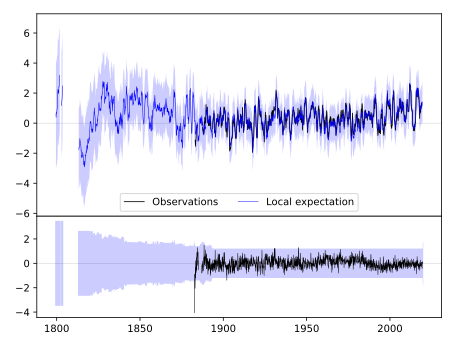
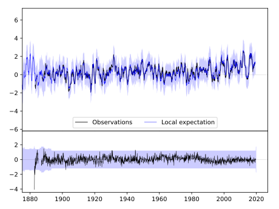
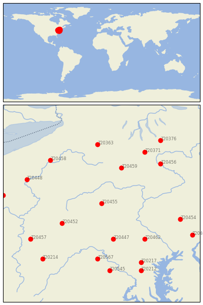

STATE COLLEGE [USA]


| Neighbour | Name | Country | Distance | Lon/Lat | Years |
|---|
| 720455 | STATE COLLEGE | USA | 0 | -77.9, 40.8 | 1882-2019 |
| 720452 | JOHNSTOWN | USA | 101 | -78.9, 40.3 | 1893-2019 |
| 720447 | CHAMBERSBURG 1 ESE | USA | 103 | -77.6, 39.9 | 1858-2019 |
| 720459 | WELLSBORO 4 SW | USA | 108 | -77.4, 41.7 | 1893-2019 |
| 720462 | YORK 3 SSW PUMP | USA | 136 | -76.8, 39.9 | 1840-2019 |
| 720567 | MARTINSBURG E WV RGN | USA | 155 | -78.0, 39.4 | 1891-2019 |
| 720458 | WARREN | USA | 163 | -79.2, 41.9 | 1873-2019 |
| 720363 | ANGELICA | USA | 167 | -78.0, 42.3 | 1854-2019 |
| 720456 | TOWANDA 1 S | USA | 167 | -76.4, 41.8 | 1893-2019 |
| 720371 | ELMIRA | USA | 171 | -76.8, 42.1 | 1852-2019 |
| 720448 | FRANKLIN | USA | 172 | -79.8, 41.4 | 1893-2019 |
| 720454 | READING 4 NNW | USA | 174 | -75.9, 40.4 | 1888-2019 |
| 720457 | UNIONTOWN 1 NE | USA | 182 | -79.7, 39.9 | 1877-2019 |
| 720217 | WOODSTOCK | USA | 187 | -76.9, 39.3 | 1870-2019 |
| 720545 | LINCOLN | USA | 189 | -77.7, 39.1 | 1893-2019 |
| 720214 | OAKLAND 1 SE | USA | 201 | -79.4, 39.4 | 1877-2019 |
| 720212 | LAUREL 3 W | USA | 207 | -76.9, 39.1 | 1893-2019 |
| 720453 | NEW CASTLE 1 N | USA | 211 | -80.4, 41.0 | 1893-2019 |
| 720461 | WEST CHESTER 2 NW | USA | 214 | -75.6, 40.0 | 1843-2019 |
| 720376 | ITHACA CORNELL UNIV | USA | 217 | -76.4, 42.4 | 1827-2019 |